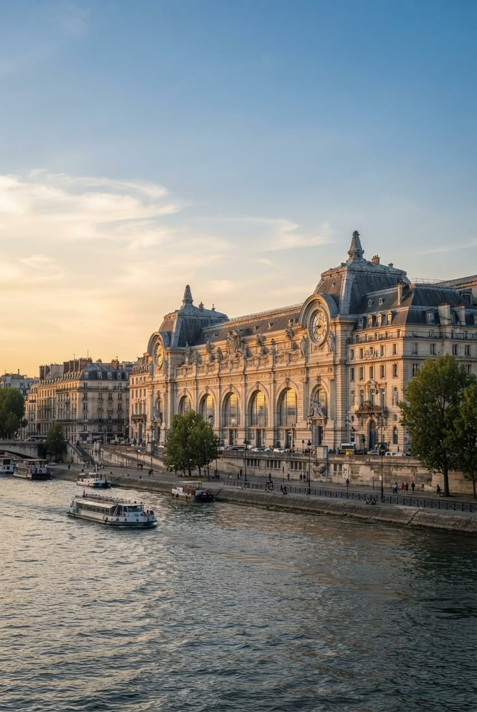
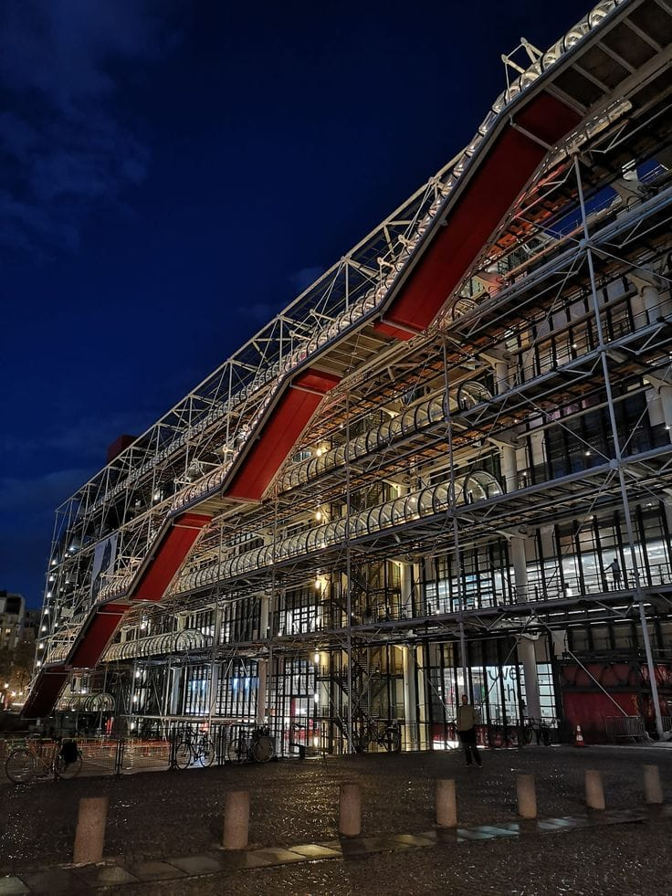

SOBRE O PAÍS
Uma mistura de história, cultura e criatividade
A França é um dos países mais conhecidos do mundo quando falamos de arte, moda, cultura e história. Paris, sua capital, é conhecida por lugares famosos, museus importantes e grandes marcas de moda.
02 — ARTE
A França através da arte

Uma história artística
A França possui uma longa história ligada à arte. Pintura, escultura, arquitetura e fotografia fazem parte da cultura do país.
Durante diferentes períodos, artistas franceses ajudaram a transformar a maneira como o mundo enxergava a arte.
03 — MUSEUS
Museus famosos


04 — ARTISTAS
Artistas franceses
Claude Monet
Um dos principais nomes do Impressionismo. Suas obras são conhecidas pelas cores e pela representação da luz.
Edgar Degas
Artista conhecido principalmente por suas pinturas e esculturas de bailarinas.
Paul Cézanne
Pintor importante para a transformação da arte moderna.
Auguste Rodin
Um dos escultores franceses mais conhecidos da história da arte.
05 — MODA
A França e a moda

Paris é uma referência mundial
A França possui uma forte influência no mundo da moda. Paris é conhecida por seus desfiles, estilistas e grandes marcas.
O estilo francês costuma misturar elegância, simplicidade e peças clássicas.
06 — MARCAS
Grandes marcas francesas
07 — TENDÊNCIAS
O que está em destaque na moda
Minimalismo
Looks mais simples, elegantes e com cores neutras.
Alfaiataria
Blazers, calças e peças estruturadas continuam sendo muito usados.
Bolsas
Bolsas continuam sendo um dos principais acessórios da moda francesa.
Clássico + moderno
A mistura de peças tradicionais com elementos modernos cria novos estilos.
“A França não é apenas um lugar. É uma mistura de arte, história, moda e criatividade.”